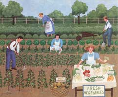
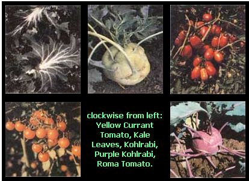
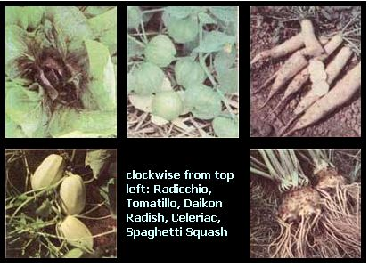

Of Daikons & Dinosaurs
Try something new!
By Kent Whealy
January/February 1988
Six garden pros share their favorite unusual vegetables.
An old Japanese saying claims that every time you eat a new food you add 70 days to your life. OK, then what might you get if you grow a totally new food?
That's the fun part - you never really know what you're going to get. Raising a new vegetable is like opening a surprise package. You can't predict beforehand what special grace it will bring to your garden or what distinctive taste to your table. And the suspense is delightfully prolonged during the weeks and months it takes the maturing novelty to "unwrap" itself.
Unfortunately, sometimes novelty is a new vegetable's only virtue. It may be difficult to grow, not much to look at and awful to eat. So to help you choose the seed packages that will provide the most pleasurable surprises, we've asked a group of adventurous gardeners to describe some of their favorite "unusual" varieties - the ones that have won permanent places in their gardens and hearts. Just reading over their lists and comments has reawakened the gardening fever in our winter-locked spirits. We bet that, after you savor these tantalizing descriptions, you too will start filling out seed orders for crops you never knew existed.
By the way, for complete information on how to raise and use these, and many other, novel crops, watch your newsstand for the February issue of our ongoing series of special publications. The entire issue is devoted to a home gardener's encyclopedia of over 50 unusual vegetables.
One more thing: The addresses for the seed companies mentioned here are listed in " Mother's 1988 Seed Company Wishbook Guide ".
Kent Whealy
Whealy is the director of the Seed Saver's Exchange, a nationwide group of gardeners dedicated to sharing and maintaining "endangered" vegetable varieties. The SSE is keeping alive thousands of family heirlooms, traditional ethnic crops and outstanding standard (nonhybrid) varieties, many of which have been ignored or dropped by commercial seed companies.
Whealy himself helps maintain the SSE Preservation Garden, a four-acre plot with over 1,500 vegetable varieties. Here are just a few of his many favorites:
Aunt Mary's sweet corn. "W.W. Williams and his father helped breed this in the 1930s in Oregon. It's one ofthe sweetest non-hybrid corns I've ever tasted. In fact, the sugar content is so high that you can't dry the seeds on the plants - they'll mold first."
Dinosaur gourd. "This spectacular gourd is one of the oddest-looking things I've ever seen. It has a long curved neck, and both the club and bowl are covered with serpentine projections that look like the ridges along a dinosaur's back. It's grown for ornamental use only."
Jenny Lind muskmelon. "The 5"-diameter fruit of this melon is oddly shaped; flat with deep ribs, like a turban squash, and with a button on the blossom end. It has green flesh, too - but it's about the sweetest I've ever eaten."
Fleener top set onion. "We'd heard for years about multiplier onions that would produce 3" or larger onions when you planted the top sets. We finally tracked down one that does. William Arthur's great, great grandmother Fleener, a widow with 11 kids, brought it to their farm in 1853."
Golden sweet pea. "This American Indian plant produces an edible-podded pea that's very tender and has excellent quality. It's also beautiful. The purple flowers are followed by 3"-long lemon yellow pods. Golden is the only yellow edible-pod pea I've ever seen."
Aconcagua pepper. "Named after a mountain in South America, the Aconcagua is a huge, sweet, yellow pepper with excellent flavor. The fruits are as big around at the shoulder as a regular green pepper, but up to 10" or 12" long."
Green Mountain potato. "This spud comes from northern New England. It flowers early, is very vigorous and gives a good yield. The round or oblong tubers have lightly russeted skin and dry, white flesh."
Rogue Vif d'Etampes pumpkin. "Introduced in 1883, this deeply ribbed French pumpkin is round and flat. It may be 18" in diameter but only 6" deep. It's a good keeper and its thick, yellow-orange flesh has excellent flavor."
Stump of the World tomato. "From the collection of Ben Quissenberry, a 95-year-old seed grower who died just last year, the Stump of the World was probably the best of the 300 different tomatoes we grew last year. It has a high crimson gene, so it's a bright reddish orange. And its rich, red meat is among the best I've ever tasted."
Mike Kusky's long tomato. "This banana pepper-shaped paste tomato can grow to over 6" long. It's red, really meaty and superb for making paste or sauce."
Moon & Stars watermelon. "Henry Fields used to carry this incredibly beautiful garden plant back in 1930. The dark green rind has yellow spots that range from the size of a pea to that of a silver dollar. And its sweet, pink flesh has very good flavor."
Whealy's Seed Saver's Exchange is a gardeners' network, not a seed company, so you can't simply place an order. To obtain seeds, you must first become a member ($12 a year, $9 for senior citizens). You'll get the large winter and fall yearbooks, which list over 9,000 plants. You can then obtain seed directly from individual growers. Whealy hopes that you too will help by saving and sharing seed from the crops you grow.
You can obtain a free brochure that explains the SSE's projects and publications by sending a long SASE to Seed Saver's Exchange, R.R. 3, Box 239, Decorah, IA 52101.
The Bintje potatoes are "just absolutely gorgeous! And how often do you say that about potatoes?"
Like Kent Whealy, the creator of Seeds Blüm in Idaho has a special interest in heirloom vegetables: varieties developed for gardeners, not for commerce; for flavor, not for shipping. Indeed, Blüm's seed company offers several of the crops Whealy mentioned: Aunt Mary's sweet corn, Jenny Lind muskmelon, Aconcagua sweet pepper, Green Mountain potato, Rouge Vif d'Etampes pumpkin and Moon & Stars watermelon.
Blüm ( the subject of our interview on page 82 ) is interested in other garden gems, as well. "Primarily," she says, "I'm oriented to color and texture. Some varieties are my personal favorites because they brighten up the garden; some, because I like to serve them on the table; and others, because they're especially versatile in the kitchen. I lean toward vegetables that are multipurpose. If you're going to grow something, you might as well get the most out of it."
Here's just a few of Blüm's choices:
Romanesco broccoli. "While other broccolis are not what most people would consider beautiful, the conical, spiraling heads of Romanesco look gorgeous on vegetable trays. It's lovely steamed, too. It has a different, mild flavor, and the yellow-green color really stands out."
Super Italian paste tomato. "It takes only a few of these large (4" by 6") paste tomatoes to make a pot of sauce. You can also harvest them while their shoulders are green, and - like a long-keeping tomato - they'll go ahead and ripen beautifully."
Currant tomato. "It's what the cherry tomato tried to be. You can pop these pea-sized fruits in your mouth, and they won't squirt all over."
Yellow Cheese pepper. "The very thick flesh is extremely sweet - simply wonderful in salads. It's on the early end of the medium-season peppers, so it does okay here in Idaho."
Sucram carrot. "These are like baby carrots - mature when they're just 2 1/2" to 3" long. And they're very, very sweet."
Bintje potato. "This very prolific plant produces lots of nicely flavored potatoes with pretty, waxy, yellow skin. Also, because of their yellow flesh, you tend not to use as much butter on them. The first time I saw them, my comment was, 'They're just absolutely gorgeous!' And how often do you say that about potatoes?"
Red Striped Leaf amaranth. "It's very attractive in the garden, and you can even bring this amaranth inside as a houseplant. The leaves are just beautiful when served on a plate, and the cooked flavor is quite like spinach. The greens contain more iron and calcium than any other garden green."
Baby sea kale. "In the very early spring, the blanched stalks of this perennial can be used like asparagus. They taste sort of like turnips, and I'm not crazy about turnips, but for some reason I love the flavor of baby sea kale. And it comes in real early, when you're anxious for garden freshness."
Anise Hyssop. "I'm not a tea drinker, but Anise-Hyssop tea has got to be the best I've ever had. I also love the plant's scent, and its blooms are attractive in dried flower arrangements. This multipurpose herb has danced into the circle of my favorites."
Ragged Jack kale. "Good all year round. It's flavorful in the summer when no other kale is. When young, the bright purple, red oak-type leaves are beautiful in salads and sweet to taste. It's beautiful when planted in a border, too."
Sunroot. "You know how knobby Jerusalem artichokes are? Well, our smooth sunroot variety is large and perfectly smooth. Sliced up, this nutty, nutritious vegetable can be served in salads, just like radishes."
All of the varieties Blüm mentions are available from Seeds Blüm, Idaho City Stage, Boise, ID 83706 (catalogue $2).
Nancy Bubel
Pennsylvania gardener Nancy Bubel says, "I've been gardening for 28 years, and learning something new each year. I've written six books, five of them on gardening. I still have a list of garden projects to try and new-to-me vegetables to grow. (A green called orach is next.)"
Her latest book, The New Seed Starter'sHandbook, is available from Rodale Press as of January 1988. Her most recent article for Mother Earth News was our "Seed Saving" guide in issue 107.
Some of Bubel's favorite unusual vegetables are:
Des Vertus Marteau turnip. "When your teenage son says, 'Mother, these are good turnips!' you know you're onto something, right? This variety has good texture and very good, buttery flavor. It really tastes like a different vegetable. Long and white, it's best as a fall crop. From Epicure Seeds."
Mizuna. "A real winner that's very easy to grow. Plants I start in spring produce well until after fall frost. Mizuna is a nutritious green, good either raw or cooked and (hooray!) mild -flavored. From The Cook's Garden and Le Marché."
New Zealand spinach. "This spinach substitute grows well in warm weather (although it germinates best in cool soil). It can also take light fall frosts and volunteers readily from self-sown seed. Widely available."
Adzuki beans. "These fine dry beans are easy to grow and pretty much bug-free (even Mexican bean beetles seem to leave them alone). They do require lots of shelling, though. My favorite variety is Express from Johnny's."
Hakkaido pumpkin. "This is the best-tasting pumpkin I know. Its delicious, sweet, dry flesh is even better than Buttercup's. However, it's not as productive or as disease- and pest-resistant as some pumpkin varieties. From Johnny's."
Romaine lettuce. "Lots of people grow leaf and butterhead lettuce. Few grow Romaine. They should. Its dark green leaves are very nutritious and have good flavor and excellent texture. It's best started indoors and transplanted. Widely available."
Kohlrabi. "The baseball-sized globe of this exotic brassica provides good salad crunch in spring before any cucumbers come in. I plant short rows of kohlrabi every two or three weeks in spring and again in July for fall harvest. Widely available."
Long Season beet. "We count on these for winter eating - they're easy to grow, have good flavor and will keep until the next summer. They're quite large and rough-looking but have a fine-textured inner flesh. From Gurney's."
Kale. "A Bubel family favorite. It has high vitamin value, is very hardy and is easy to grow. It has very good flavor after a couple of fall frosts sweeten it up (before then, it's too strong for our liking). Widely available."
Spaghetti squash. "It's fun to tease out the mild-flavored strands of this versatile 'pasta squash.' Bake it in the oven for 45 to 60 minutes, scoop out the flesh, then enjoy it under sauces or grated cheese. It keeps moderately well (better than Buttercup squash, but not as long as Butternut). Widely available."
Susan Sides
"The first time I tasted a Chiogia, I knew I'd be planting them next year."
Sides is MOTHER'S own head gardener. She's been raising vegetables, flowers and herbs organically for over 13 years, from the sands of Florida to the clay loam of our western North Carolina mountains. This past summer she raised over 64 unusual vegetables as part of her research for our upcoming AMERICAN COUNTRY guide to unusual vegetables. About half of the crops she mentions here are among those she grew for the first time last summer. The rest are long-time personal favorites.
Jumbo green bean. "These bush beans are prolific and the pods are stringless-even when they're 10" long. A mature bean is the size of three or four regular green beans, which makes meal preparation and preserving a snap. I love them cooked with chunks of tomato, basil and garlic. From Johnny's."
Purple-Podded green bean. "I'm fond of these for two reasons. First, they tolerate cool, damp clay soils, so you can plant them early. Then too, the purple color pops right out at you, so you don't miss any and have them go to seed. (They also turn green when cooked two minutes-providing a built-in timer for blanching.) From Shepherd's."
Kentucky North green bean. "If picked when about 5" long and 1/4" wide, these pole beans (not to be confused with Kentucky Wonder) surpass gourmet French beans for exquisite flavor. I remember thinking when I ate my first serving that surely no one could be eating better than I was that night. From Johnny's."
Green soybean. "We love our bowls of steamed Johnny's Butterbean soybeans. (Steam the green pods eight minutes, then cool, pop the beans out, and finish steaming.) They require little care, almost thriving on neglect - with one caveat: Wild animals love them. This year the ground hogs beat us to our soybeans three times!"
Kinko carrot. "Our all-time favorite. The short, sweet roots of Kinko carrots tolerate hard clay soils and hot, dry summers. They even lived through the mistake-filled care of the 10 apprentice gardeners we had one year. From Johnny's."
Chioggia beet. "I thought this might be just a novelty grown for its beautiful red and white concentric rings. But the first time I tasted a Chioggia, I knew I'd be planting them next year. Even the large ones were sweet and mellow. From Le Marché and Seeds Blüm."
Cutting celery. "Many people think normal celery is hard to grow, but this European variation (also called Leaf celery) is easy to raise. Snip off a clump of the bushy foliage and dice it up for flavoring soups, stews, rice pilaf, potato salad - you name it. From Le Marché and Blüm."
Fine Maraichere frisee endive. "I'd always hated endive - too bitter and tough-until I gave this curly variety a try. Its neat, small, 8" heads grew to perfection in the cool of autumn. Even without blanching (which is customary with endives, especially spring sowings), frilly-leaved Fine Maraichere was crisp, lovely and delightful in salads. From Le Marché."
Jicama. "When eaten raw, this vegetable has the crunch and juiciness of an apple crossed with a water chestnut - I've eaten a baseball-sized jicama in one sitting. I started mine indoors in spring, and they grew slowly until late summer, but then the plantsand those tasty roots really took off: From Horticultural Enterprises, Nichols and others."
Delicata and Sweet Dumpling squash. "Both these winter squashes are just the right size for one or two servings. The taste is sweet, nutty and rich, and the consistency is creamy. They don't store as well as some other varieties, but it doesn't matter - they're the first ones we eat up! From Johnny's."
Greg and Pat Williams
The authors of our " Seasons of the Garden " column (of this issue), Greg and Pat Williams live on a 115-acre farm in Gravel Switch, Kentucky. They grow and preserve all their own food - except for grain and dairy products. They raise over 80 food trees, including apple, pear and persimmon. They also publish HortIdeas, a monthly research newsletter that encourages back yard garden experimentation. Their selections are based on a great deal of personal experimentation.
Celeriac. "Celery does poorly in hot summers, but celeriac grows well and is not demanding. We use the roots (they store well) in winter soup and stews, and the leaves (sparingly, they're a bit strong) to add celery-like flavor to other dishes. Widely available."
Daikon radish. "These large, long, white Oriental radishes take longer to grow than the popular small globes, but they're milder, keep much longer and are more versatile. You can use this fall crop as a main vegetable instead of as a garnish. From Johnny's, Le Marché and others."
Rat-Tail radish. "Grown for its 9" (or longer) seed pods rather than its roots, RatTail pods have a flavor similar to that of hot radishes, but a totally different texture and a downright weird appearance. They're great stir-fried. From Blüm."
Peanuts. "They're fun to grow. The nuts are actually produced from "pegs" that drop down from the plant's spent flowers and dig into the ground. The plants are quite ornamental and not difficult to raise (they do require some extra care if you live in a cool climate). From Gurney's and Park's."
Perpetual Spinach beet. "As the name suggests, this beet is raised for its leaves. The plant grows very quickly and lasts all summer. Its leaves resemble chard, but have a much milder and better flavor. We use them as a main salad ingredient. From The Cook's Garden."
TexSel greens. "Originally from Ethiopia, this spring-or-fall variety of Brassica carinata was developed by Texas A&M University for high yields, high protein, low oxalic acid, wide growing range and mild flavor. Its mild mustard flavor is good raw or cooked - even our kids like it. From Foundation Seed Service, Texas Agriculture Experiment Station, College Station, TX 77843 (sample $1 plus SASE plus 44 cents postage)."
Orach. "An easy-to-grow spinach substitute, orach is very similar to wild lamb's-quarters, but has larger leaves. If you don't have much of that nutritious weed growing in your plot, give this crop a go. From The Cook's Garden."
Cowpeas. "Traditional Southern fare, cowpeas can be raised in the North, as well-some varieties need only 50 days to reach green maturity. And they're delicious green. (We also raise them to dry.) They fix nitrogen, are little bothered by Mexican bean beetles and don't seem to cause much flatulence. From Southern Exposure Seed Exchange and Park's."
Elephant garlic. "The bulbs and cloves are much larger (and milder) than those of regular garlic. They can be chopped and used almost like onions - they're especially good with oil and pasta. From Gurney's and Blüm."
Garden purslane. "This is a large-leaved variety of the common weed. It has a pleasant, mildly acidic taste and is very high in vitamin C. From The Cook's Garden."
Tomatillo. "If you like Mexican food, you should grow tomatillos. We treat them exactly like tomatoes, except they don't need staking or caging. They're attractive and are a main ingredient in salsa verde and other Mexican dishes. From Shepherd's and Horticultural Enterprises."
Renee Shepherd
Renee Shepherd started her California seed house after the visiting manager of a large European seed company told her that many of his best-tasting varieties weren't marketed here. The American companies generally wanted vegetables bred for commercial use. European varieties, by contrast, were bred for fine flavor, tenderness and the best fresh-eating qualities.
Shepherd began working directly with French, Dutch, Italian, English and other seed companies so she could offer American gardeners the opportunity of growing these choice European vegetable varieties. She's grown and cooked all the crops she offers herself and is wonderfully enthusiastic about them. Indeed, she mentioned over 30 favorites to us - a list we painfully whittled down to 11 for this article.
Scented basil. "Lemon, anise and cinnamon scented basils are ornamental, fragrant and great in cooking. Anise is especially good in tomato, Cambodian and Thai dishes, while cinnamon makes good marinades and is great for sweet-and-sour dishes and fruit salads. Cinnamon, in particular, hooks a nongardening spouse every time."
Red and White Knight Runner beans. " These are stringless and much sweeter than the popular Scarlet Runners. They attract hummingbirds, are quite prolific and beautifully ornamental - truly one of the best 'edible landscaping' plants. The beans are delicious both fresh and dry."
Violet Queen purple cauliflower. "The head of this compact, quick-growing plant turns green when cooked and has a delicate flavor somewhere between broccoli and cauliflower. It's easier to grow than regular cauliflower and less susceptible to pests and diseases."
Curly cress. "Grow it instead of green onions-it looks like parsley or chervil and is fast and easy to grow. It adds zip and spice to sandwiches and salads."
Radicchio. "This is the tart, slightly bitter red chicory so popular in fine restaurants. I like the variety Giulio because, unlike traditional fall types, it heads in the spring and summer. Add a handful to a salad for color and flavor. Do reserve your judgment on its taste until it is put into a salad, and use only thin vinaigrettes (I like lemon, herb vinegar, olive oil and a half-teaspoon of sugar) to complement the taste."
Finochio. "A cool-season crop that has a celery- and aniselike flavor. I like the root braised with chicken broth or in butter. Be sure to add some of the feathery top growth."
Anaheim pepper. "This 7"-long pepper (also called green or California chili) is easier to raise than sweet peppers and has a wonderful mild flavor that is undervalued by Americans. It goes great with corn, squash, beans and chicken."
Wolter spinach. "This smooth-leaved Dutch hybrid has a less metallic taste than regular spinach. It grows rapidly, yields well and is resistant to three races of downy mildew. Wolter will turn the most staunch spinach hater into a regular Popeye."
Sunburst Yellow Scallops squash. "The squash on this prolific plant are deep gold. I like to harvest as a baby vegetable when they're 1" to 1 1/2" long. The taste is nutty and sweet, and much milder than regular squashes."
Carmelo tomato. "This French variety is a midseason main crop that bears lots of large fruits with unequaled flavor. They're exquisite fresh from the vine, and disease-resistant to boot."
Vernandon Haricots Verts beans. "A heavy-bearing French filet green bean. You must pick the slender, 6"-long, sweet-tasting beans every other day. Steam them whole with perhaps a sprinkling of fresh dill and a bit of sour cream or butter for sauce."
All the varieties Renee mentions are available from Shepherd's Garden Seeds, 7389 W. Zayante Rd., Felton, CA 95018 (free catalogue).
Related Articles:
Conversation with Jan Blüm A Guide to Garden Wishbooks Seasons of the Garden
|
 Kent Whealy grows over 1,500 vegetables - including the Moon & Stars watermelon. |
 Nancy Bubel "When your teenage son say, |
 Greg and Pat Williams "If you like Mexican |
|
Renee Shepherd "Wolter will turn the most |
 Dinosaur, the Godzilla of gourds. |
|
|
|
|
|